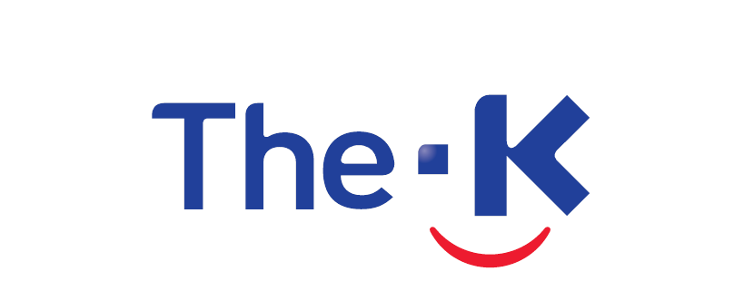

01
나의 업무 MBTI 진단
20개 업무 상황별 문항을 통해 내 업무 성향을 확인합니다.

개인과 팀(지부)의 업무스타일을 함께 살펴보고, 실제 업무 개선 아이디어로 연결해보는 참여형 이벤트입니다. 개인과 팀(지부)의 업무스타일을 함께 살펴보고, 실제 업무 개선 아이디어로 연결해보는 참여형 이벤트입니다.
20개 업무 상황별 문항을 통해 내 업무 성향을 확인합니다.
구성원들의 진단 결과가 자동 집계되어 팀(지부) 전체의 업무 기질을 분석합니다.
진단 결과를 실제 업무와 연결해 보고, 구체적인 개선과제를 도출합니다.
구성원들이 각자 검사한 결과를 자동 집계해 팀(지부) 대표 MBTI와 주요 업무 기질(SJ·SP·NT·NF)을 확인합니다.
웹페이지의 진단 결과를 참고해 실제 업무에서 확인되는 사례와 개선 필요성을 살펴보고, 우리 팀(지부)에 필요한 개선과제를 구체화해 보세요.
팀(지부) 대표 MBTI와 주요 업무 기질, 업무상 강점 및 점검이 필요한 부분을 확인합니다.
강점·보완점이 실제 업무에서 어떻게 나타나는지 구체적인 업무 사례와 개선 필요성을 정리합니다.
업무 특성을 고려해 개선과제 1건 이상을 선정하고, 개선을 통해 달성하려는 목표를 구체화합니다.
실행한 내용 또는 향후 추진할 구체적인 개선방안과 기대 효과를 작성합니다. 개선 증빙자료 제출은 선택사항입니다.
규정에 명시되지 않은 반복 업무를 담당자별 경험에 따라 처리하는 경우가 있음
담당자 변경 시 처리 기준이 달라질 수 있어 주요 판단 기준을 공통화할 필요가 있음
비정형 반복 업무의 주요 처리 기준 정리
담당자와 관계없이 유사 사례를 일관된 기준으로 처리할 수 있도록 업무 기준을 명확화
주요 사례와 판단 기준을 정리한 업무가이드를 마련하거나, 향후 가이드 작성·공유 계획을 수립
업무 처리의 일관성을 높이고 담당자 변경 시 발생할 수 있는 업무 공백과 반복 문의를 완화
※ 실제 개선이 이루어진 경우 기안문, 업무가이드의 업데이트된 부분, 업무 화면 등 증빙자료를 선택적으로 첨부할 수 있습니다.